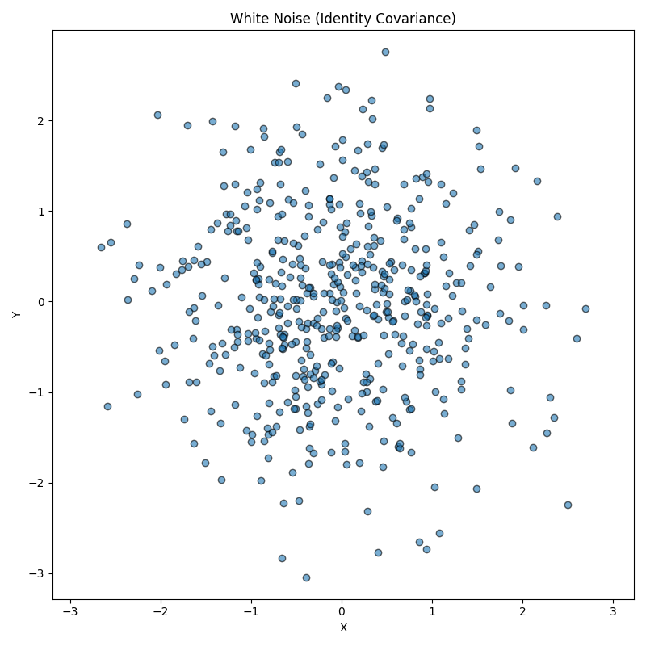
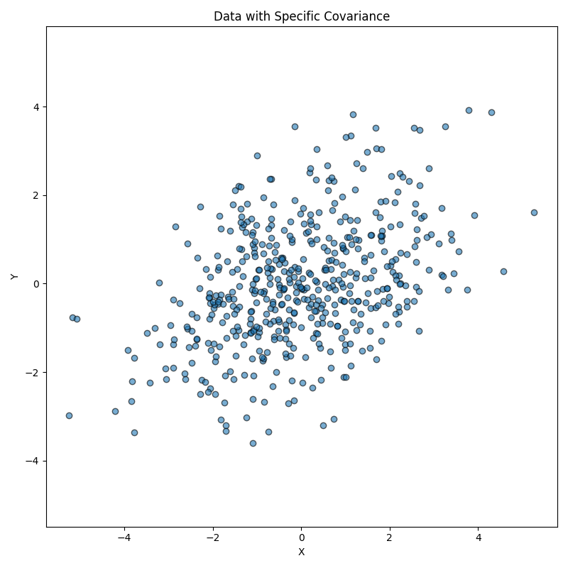
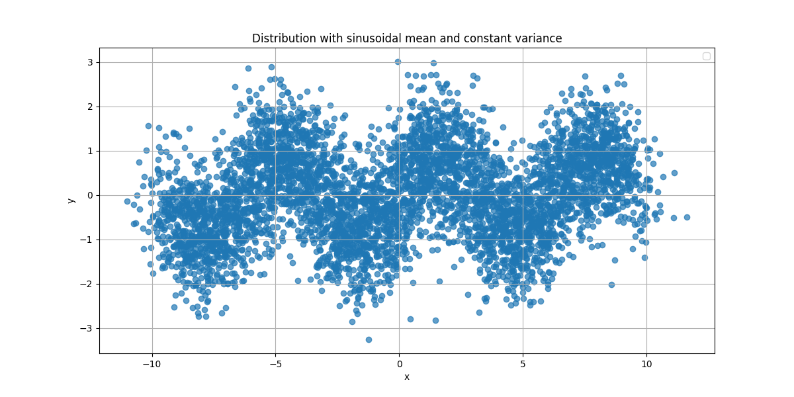
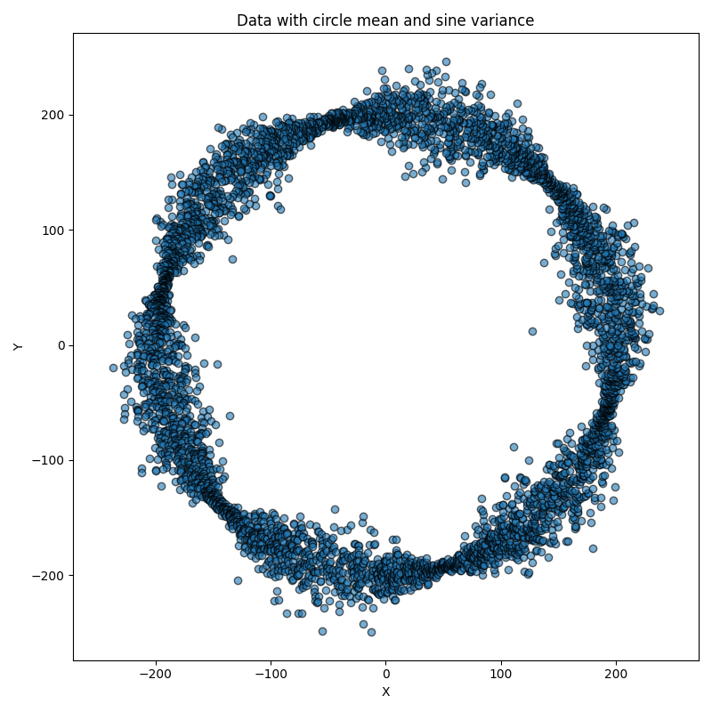
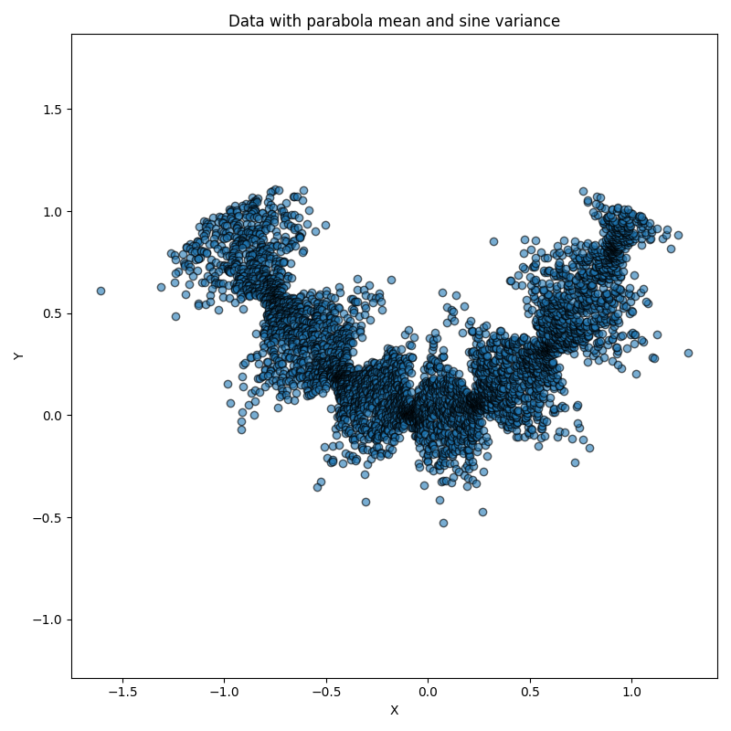
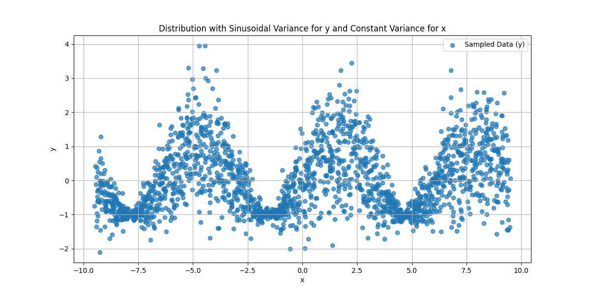

As an informative description of a linear data distribution, the covariance matrix is an interesting object. Here I try to give some intuitions on its geometry.
As a square matrix, the covariance forms a linear vector space. The special case of symmetric matrices is a linear vector subspace of the linear space of square matrices. A matrix is inherently a linear operator and cannot capture non-linear dependencies by itself.
A linear vector-space is a manifold. In this case, the manifold is flat, meaning it has no curvature and can be globally parameterized. A linear vector-space can be equipped with the Euclidean metric, which defines the distance between two points as the length of the straight-line. For a flat space, this corresponds to the geodesic distance associated with the metric. It coincides with the euclidean distance. A manifold is a topological space that locally resembles Euclidean space. A linear vector-space resembles Euclidean space locally and globally.
The set of symmetric matrices forms a linear vector-space. All open neighborhoods of a manifold are also a manifold. Each positive definite symmetric matrix has another positive definite symmetric matrix in its open neighborhood. Thus, the set of symmetric positive definite matrices forms a manifold. The same does not hold for semi-positive definite matrices.
We say that a covariance matrix induces a regular distribution if it is positive definite and a singular distribution if it is semi-positive definite. If it is semi-positive definite, then there exists a feature-dimension/direction along which no data variability occurs. If one measures data with a singular covariance, the singular dimension carries no information on the data-variability and can be omitted without loss of description accuracy. If one were to examine the likelihood of a model for describing data, the singular dimension has no influence on the likelihood.
This gives us a basis for understanding distributions as being located on manifolds (i.e., we can move smoothly from one distribution, defined by covariance and mean, to another), and a (vector-) directional sense in terms of model parameters/feature dimensions with influence on data-variability and model-likelihood.
We start by considering data distributions and extend this to model-distributions. The concepts are transferable. In one case, each sample corresponds to a data-sample (defined by the feature dimensions/parameters), in the other case, each sample corresponds to a model-sample (defined by the model dimension/parameters). This can be related to the difference between model parametrizations vs. model-free parametrizations of data-distributions.
Some covariances and their distributions
The simplest distribution is white noise, which in \(2D\) corresponds to a Gaussian with mean at the origin and covariance matrix:
Note that it is regular. White noise can be transformed to another (linear) data-distribution by a linear transformation. Let:
$$
z \sim \mathcal{N}(0, I)
$$
be sampled from white noise. Then
$$
x = A z + b
$$
has covariance
$$
\Sigma_x = A I A^T = A A^T
$$
and mean
$$
\mu_x = b.
$$
The covariance matrix can be diagonalized. The eigendecomposition of \(\Sigma\) gives:
$$
\Sigma = U D U^T
$$
where \( U \) is a matrix of eigenvectors, and \( D \) is a diagonal matrix of eigenvalues.
Set \( A = U D^{1/2} \), where \( D^{1/2} \) is the square root of the diagonal eigenvalue matrix. The transformation then becomes:
$$
x = U D^{1/2} z + b
$$
giving the desired covariance. In the following, the distributions which can be described in this way are visualized.
Linear Distributions
Let us visualize some distributions.
Figure 1: Linear Distributions

White Noise

Transformation to the same mean, different covariance
If we want the mean of our transformed distribution to follow the line:
$$
y = a \cdot x + b.
$$
We introduce noise with variance \( c \) in the normal direction to the line. The line \( y = a \cdot x + b \) has a slope vector \( (1, a) \). The normal direction to this slope is given by:
$$
\vec{n} = (-a, 1).
$$
The normalized normal vector is:
$$
\hat{n} = \frac{(-a, 1)}{\sqrt{1 + a^2}}.
$$
Scale the noise to have variance \( c \):
$$
\sqrt{c} \cdot \epsilon \sim N(0, c).
$$
Project the scaled noise along the normalized normal direction:
and we return to a distribution with a certain covariance around mean zero.
Another way of representing the distributions along lines is by the mentioned transformation of white noise so that the variance in the desired direction is very high, potentially infinite. Thus, linear distributions (as I call them) are equivalent to a transformation of white noise.
Note that if the mean follows a non-linear function (e.g., a sine), we could still create this distribution, following the reasoning above, by determining the normal vector and applying noise in that direction. However, due to dependencies on \( x \), this is not an affine transformation of white noise.
Regular and Singular Covariance
Figures below show distributions that can be obtained by a rotation. Both can be obtained from white noise. One direction has a very high variance. This variance would potentially be infinite, but in reality, most real-world data is finite.
Figure 2: Regular Covariance with Linear Mean
Regular covariance with linear meanRegular covariance with linear mean
An important example is the distributions in the figures below, where the variance normal to the line is zero. The data is two-dimensional, yet only one dimension varies. The covariance matrix does not have full rank and corresponds to a singular distribution. The data can be represented just as well in a single dimension without loss of accuracy.
Figure 3: Singular Covariance
Singular covarianceSingular covariance
If we measure data with a singular covariance, some directions are degenerate (have zero variance). This is an indication that those directions provide no information, and these dimensions can be omitted without losing description accuracy.
Mahalanobis Distance and Covariance Geometry
Within the linear space that contains our distribution, one can define the Mahalanobis distance as:
In directions where the data has high variance, the Mahalanobis distance will be smaller. Conversely, in directions of low variance, the distance will be larger. This accounts for the fact that outliers in low-variance directions are more significant than in high-variance directions.
In light of this, the covariance might be interpreted as a deformation of the linear space, which stretches some directions (those with low variance) and compresses others (those with high variance).
While it can introduce diagonal relationships, no curvature or torsion can be created by a constant covariance matric.
If \(\Sigma = I\) (as for white noise), the Mahalanobis distance coincides with the Euclidean distance, and \(\Sigma = I\) might be interpreted as uniformly "stretched" space. The elements of \(\Sigma^{-1}\) correct for the stretching and compression of space by accounting for the effect of variance and covariance.
Distributions with Constant Mean
The distributions we considered in the figures above have a constant mean. These distributions can be obtained from white noise by linear transformations. All regular distributions can be transformed back to white noise, whereas the two singular distributions cannot.
In some cases, \(\mu(x,y)\) is nonlinear, but the covariance is constant.
Figure 4: Sinusoidal Mean and Constant Variance

Sinusoidal Mean and constant varianceCircular Mean and constant variance
Distributions with Varying Covariance
Another interesting case is when the data distribution is not described by a constant covariance matrix. Instead, the covariance is a function of the parameters. We can distinguish between cases where this function is linear vs. non-linear. Since this relationship is not a constant, it requires a parameterized covariance matrix of the form:
Figure 5a displays a discontinuous variation in covariance. While this can still be stitched together by a fiber bundle, it is not a smooth, differentiable manifold. Discontinuous cases can be considered approximately continuous with some loss of accuracy, and we will ignore discontinuous cases in the following. Figures 5b and 5c display distributions with covariance that varies in linear and non-linear manners, respectively. In both cases, the mean follows a linear parametrization.
Complex Covariance and Mean Structures
More complex cases exist when both the mean \(\mu(x,y)\) and covariance \(\Sigma(x,y)\) are nonlinear. Examples are displayed in Figures below:
Figure 6: Non-linearly Varying Covariance on a Circle

Nonlinear distribution on a circle

Nonlinear distribution on a parabola

Nonlinear covariance distribution with sine-wave mean
These distributions cannot easily be modeled by a simple covariance matrix and a mean. However, locally (if the transitions are continuous and the neighborhood is small enough), they are well behaved and adhere to the linear description. If the distribution is regular in all points, then smooth transitions from one neighborhood to another can be defined by considering a Riemannian geometry on which the data-distribution lives.
Manifold learning exploits this local linearity by determining data-samples that are in linear neighborhoods of each other. Then, the data-distribution of these samples can be assumed to be linear. It is not always trivial to determine which points are close to each other by only looking at the dimensional data representation (e.g., pixel values).
Covariance Matrix as a Geometry of Linear Space
These examples serve as visualizations to help build an intuition about how a covariance matrix induces a geometry in linear space. Thus, given a covariance matrix, we might think about a stretched/compressed Euclidean space. We have examined how this can be seen as a transformation of Gaussian noise and explored more complex cases, where the data-distribution depends on the parameter. These complex cases, when continuous, can be seen as smooth transitions between linear cases. For singular distributions, problems arise due to the existence of degenerate directions. A singular covariance matrix is related to perfect correlation.
Fisher Information Matrix
An interesting covariance is the Fisher Information Matrix. In machine learning, one aims to maximize a likelihood \( p(x, \theta) \) or log-likelihood \( \log(p(x, \theta)) \) by finding the optimal parameters \( \theta \).
The gradient of the likelihood with respect to the parameters is defined as:
and is called the score of the model. It can be shown that, under regularity conditions, the score of the true model \( \tilde{\theta} \) is zero. In general, the score is indicative of the model-parameter sensitivity. The notion of a score-based gradient has been exploited successfully in generative modeling, under the name of score matching.
For each \( \theta \), it is possible to define the Fisher Information Matrix as the covariance of the score:
Given the previous examples, this should create some intuition of the underlying geometry defined by this matrix. Note that this covariance matrix varies smoothly, depending on the location. Considering the distance induced by a covariance matrix, it can be shown that \( \mathbf{I}(\theta) \) is a Riemannian metric, providing the tangent space of \( \theta \) with an inner product and defining distances between distributions. The geodesic distance is the path-integral of distances induced in each point by the local covariance matrix. The idea is similar to the Mahalanobis distance, but, due to the interpretation in terms of model parameter sensitivity (as opposed to data sensitivity), we do not use the inverse.
Geodesic Distance in Parameter Space
Consider an infinitesimal displacement \( \frac{d\theta }{dt} = \lim_{\Delta \rightarrow 0} = \theta + \Delta \) and a path \( \gamma(t) \) related to the displacement by:
$$
d \theta = \frac{d \gamma(t)}{dt} \, dt.
$$
The infinitesimal distance from \( \theta \) to \( d\theta \) is:
This is the infinitesimal squared distance in Riemannian geometry with the Fisher information matrix as the metric tensor. When \( I(\theta) \) is large, indicating a high likelihood sensitivity of a parameter, the distance in that direction is also large. Moving in directions with high sensitivity (i.e., corresponding to high information content) traverses a larger distance, while moving in directions with low sensitivity does not get us far. If we want to minimize the likelihood, we prefer to move the shortest path from \( \theta_1 \) to \( \theta_2 \), i.e., update the most informative parameters.
The distance between \( \theta_1 \) and \( \theta_2 \) becomes:
where \( \gamma(0) = \theta_1 \) and \( \gamma(1) = \theta_2 \).
This geodesic distance allows for the quantification of distribution similarity. Distributions (parameterized by \( \theta \)) are close if the information content is similar and distant otherwise. The geodesic distance is symmetric. For infinite step sizes it coincides with the KL-divergence
Geometries of a neural net
The geometry of neural networks, auch as CNNs and Bolzman machines is focus of recent research.
Geometric Inductive Biases of Deep Networks introduces quantities
which study the relation between input-space covariance and model covariance.
They introduce the quantities
called average geometry and average geometry evolution respectively. The quantity \( T_t \) represents the distribution of
the trajectoreis of \( \theta \) during training. It is subject to stoachstisticity by different initalizations, mini-batching
and randomness in the training procedure.
The data-covariance is defined as the linear covariance
$$
s = \sum_{i=1}^{N}x_ix_i^T = XX^T
$$
It is shown that \( \Delta t \, F(x) \rightarrow G_0(x)SG_0(x) \) as \( n \rightarrow \infty \) where \(n \) corresponds to model width. In essence,
the geometry induced by the covariance is mapped via the average geometry of the model at initalization
(similar to a rotation and rescaling of a distribution explained above).
For multiplayer perceptrons \(G_t(x) = I \). The same does not hold for convolutional networks.
If \(G(x) \) is structured (i.e. has singularities), then some directions (those with eigenvalue zero) are uninformative and the model is invariant to these.
For a convolutional neural net these directions might correspond to translations of the data since a convolutional classifier
should be invariant to translation. However, a convolutional object detector should be equivariant, not invariant, not translations.
Models fails to generalize, when decision boundary normals ( \( \mathbb{E}_{\theta} \Delta_x f_\theta(x) \) ) are aligned with invariant directions.
The resuls show that the eigenspace generated by the average geometry of the model determines which features can be learned.
Feature-directions which are not in the eigenspace are not learned.
Experiments show a correlation of linear data covariance \(S \) and transformed covariance \(GSG\).
These results support the conjecture that the average geometry of the model at initialization \(G_t(x)\) converges to \(GSG\) for small \(t \) .
Data-samples \(x \) with high correlation to the initial average geometry seem to be more impactful on model performance.
Feature directions with low correlation to the inital geometry seem to have less impact on model performance.
This line of research leads towards an understanding of geometrical quantities in neural networks which formalize well-known properties
(such as invariance and equivariance) by eigenspace analysis of the average model geometry.
PCA
PCA is a popular and well understood algorithm which allows for data-distribution modelling and dimensionality reduction by considering the eigenspace
of the covariance matrix. As such, it is a good introduction into the covariance matrix, its meaning and possible manipulations.
Principal Component Analysis is a popular linear algorithm for systems of the form
Consider white Gaussian noise \( z \sim \mathcal{N}(0,I) \) and a mean-centered data-distribution \(p(x) = \mathcal{N}(0,\Sigma)\) . Let \(x,z \in \mathcal{R}^{n}\) .
Given the data-set matrix \(X = (x_1,....,x_N) \in \mathcal{R}^{N \times n}\) , we can construct the singular value decomposition
$$
X = U \Delta V^T,
$$
with \(U \in \mathcal{R}^{N} \), \( \Delta \in \mathcal{R}^{N \times N} \) and \(V \in \mathcal{R}^{n} \) (in the complex case we need to consider the conjugate transpose).
We can construct the linear covariance matrices
In the real case \( U \) and \( V \) are guaranteed to be real orthogonal matrices so that \( \text{rank}(X^TX ) = \text{rank}(XX^T) \).
Both covariance matrices have different dimensionality but the same non-zero eigenvalues and equal rank.
This equivalent nature of the two covariance matrices and their corresponding distributions has deep consequences in machine learning (especially for
Gaussian Processes) and is referred to as the data-space and feature-space duality.
Consider the question, which linear transformation of \( z \sim \mathcal{N}(0,I) \) yields the distribution \( p(x) = \mathcal{N}(0,XX^T) \).
The answer is
$$
x = Wz = U D^{1/2}z
$$
as becomes obvious from equation.
Note that $U$ is the matrix of eigenvectors of the linear covariance matrix \( XX^T \) and that \( D^{1/2} \) is the square-root of its eigenvalue matrix.
Thus the linear transformation relating the data-distribution to white noise is defined by eigen-directions and eigenvalues of the covariance matrix.
The eigenvalues are called the principal components, the eigenvectors are called principal directions.
The main application of PCA is in dimensionality reduction.
Until now a dimensionality preserving linear map was derived.
For dimensionality reduction consider a system as in equation \ref{eq: prob pca linear sys} with
\( x \in \mathbb{R}^n \) ,
\( z \in \mathbb{R}^d \) and consequently
\( W \in \mathbb{R}^{n \times d} \) with \( d \leq n \).
Consider the distribution \( \mathcal{N}(0, WW^T) \) and note that \( WW^T \) has rank \( d \) but dimension \( n \).
Such cases are called singular distributions (some eigenvalues are zero). Singularity indicates the existence of directions in which no variability occurs.
Given a dataset \( X \), we can perform the PCA decomposition and yield equation \ref{eq: pca solution}.
By keeping only the \( d \) biggest eigenvectors ( \( D_{-} \in \mathcal{R}^{d \times d} \) ) and corresponding eigenvalues (\( U_{-} \in \mathcal{R}^{n \times d}\) ) , a dimensionality reduction is performed. Note, that then
is a singular matrix with rank \(d\).
Along the directions corresponding to the omitted eigenvectors no variability occurs.
Since singular distributions can be hard to work with, a common practice is adding noise. In essence, we consider
$$
x = Wz + \epsilon
$$
with \( W \in \mathbb{R}^{n\times d} \), \( z \in \mathbb{R}^{d} \) and \( \epsilon \sim \mathcal{N}(0, \sigma^2I)\).
From this equation, which corresponds to the probabilistic PCA setting (see equation \ref{eq: prob pca linear sys}), we obtain
$$
p(x|z) \sim \mathcal{N}(Wz, WW^T)
$$
leading to
$$
p(x) \sim \mathcal{N}(Wz, \Sigma)
$$
with with \( \Sigma = WW^T + \sigma^2 I \approx XX^T\)
.Consider the mean centered version
\(
p(x) \sim \mathcal{N}(0, \Sigma)
\)
and perform MLE,
We only wan to keep the $d$ biggest eigenvalues and eigen-directions so that
$$
WW^T + \sigma^2 I \approx \Sigma = UDU^T \approx U_{-}D_{-}U_{-}^T + \sigma^2 I.
$$
$$
Let, $W = U_{-}(D_{-} - \sigma^2 I)^{1/2}$ so that
$$
WW^T = U_{-}D_{-}U_{-}^T - \sigma^2I \approx \Sigma.
$$
$D_{-}$ should contain the $d$ biggest eigenvalues and $\sigma = \frac{1}{n-d}\sum_{j=d+1}^{n} \lambda_j$.
Thus, the dimensionality reduction results in
If we omit \( \epsilon \), this corresponds to a linear projection of the \( n \) dimensional data \( X \) onto a subspace of $d$ dimension.
We have shown how PCA can be considered a linear transformation of white noise to a Gaussian distribution.
Thus given a data-distribution we can find the transformation \( W \) which produces our data given white noise as an input.
We have also extended this point of view to a dimensionality reduction setting.
Any linear transformation of \( d \)-dimensional white noise creates a \( d\) dimensional subspace in the \( n \)-dimensional feature space.
Considering noise contributions in its orthogonal directions solves the this issue and defines a regular distribution in the whole space.
We have shown how solving for the optimal transformation and noise parameters traces back to the eigen decomposition of the linear covariance matrix defined by \( X \).
Essentially, one keeps the \( d \) biggest directions and eigenvalues
(which have the biggest contribution to the covariance matrix) and uses the others to construct the noise parameters.
For this we have performed maximum likelihood estimation with a parameterized \( \Sigma \) matrix.
We have also hinted at an equivalence between the matrices \( XX^T \)and \( X^TX \). While living in different spaces, the image of both matrices has equal dimensions.
In some sense, both distributions are equivalent.
PCA is a very well understood and popular method. Being completely linear allows for closed form solutions, good interpretability and analysis.
Linearity is at the same time its strength and main limitation. As a linear transformation of white-noise we can not expect to create a model for nonlinear distributions.
It has been shown \markred{paper} that the variational auto-encoder with a diagonally parameterized covariance matrix pursues the principal directions of PCA.
Given these results, we might consider PCA as the linear alternative of VAEs and VAEs as its nonlinear counterpart. If our data-distribution is indeed linear, both yield the same results. If our data-distribution is non-linear, PCA will fail to capture it while the VAE still might.
Gaussian Processes and function space
Gaussian Processes parameterize a covariance matrix via a kernel-covariance. Starting from PCA they become much easier to understand,
since they can be viewed as a form of PCA in potentially infinite feature-dimensions,
created by applying a nonlinear mapping (kernel) to the feature-space.
This mapping is implicit in the kernel-covariance parameterization and does not need to be explicitly defined.
This becomes clearer by relation to the reproducting kernel Hilbert space (RKHS), where the basis functions explicitely define the kernel as their inner product.
Since a function is informally thought of as infinite dimensional vector an infinite-dimensional feature-space is also called function space,.
I like to think about euclidean space with directions representing functions and non-linear relationships.
In this euclidean space, the covariance matrix defines a linear distribution and induces a Mahanalobis distance, however, due to the possibility of
nonlinear basis directions, the expressivity is augmented.
Since a covariance matrix in infinite-dimensional feature-spaces is not computable, gaussian processes exploit the data-space and feature-space duality
and perform the covariance parameterization in data-space. The parameters are updated via maximum likelihood estimation.
Given an optimal covariance matrix, a gaussian distribution is defined and, by its conditional mean its conditional covariance, inference can be done with
uncertainty information.
Note, that the model
$$
x = Wz + \epsilon
$$
leads to
$$p(x) = \int p(x|z)p(z) dz$$
since \( z \)is white noise. If \( p(z) \) is Gaussian, then so are \( p(x|z) \) and \( p(x) \). Remember that \( XX^T \) and \( X^TX \) define equivalent distributions in different dimensions.
Consider now an alternative model.
$$
x = W\Phi(z) + \epsilon,
$$
where \( \Phi(z) \) is a kernel (some map into lower or higher, potentially infinite dimensions), \( z \) deterministic and \( w \sim \mathcal{N}(0,I) \) . This leads to
$$p(x) = \int p(x|w)p(w) dw.$$
If $p(w)$ is Gaussian, then so are $p(x|w)$ and $p(x)$.
Assume one is interested in
$$p(x) \sim \mathcal{N}(W\Phi(z), \Sigma), $$
where
$$\Sigma = WW^T + \sigma^2 I$$
and has available a set of \( N\) data-samples \( (x_i,z_i)\). This direct consideration of \( p(x) \) as a Gaussian distribution without concretizing \( \Phi(x)\) or \( W\) is what is referred to as an
integration over the space of all functions (informally: infinite dimensional vectors are functions).
However, the covariance matrix still needs to be parametrized, which limits this space of all functions to more concrete, but still very broad types.
In PCA, the prior was over \( z\) and we would just consider \( \Sigma \approx XX^T \in \mathcal{R}^{n \times n}\). We can do this because
A way of alleviating the issue of an unknown covariance matrix with unspecified feature dimensions,
is by considering the covariance \( \Sigma = X^TX \in \mathcal{R}^{N \times N} \) which is limited in dimensionality only by the amount of data-samples,
but defines a distribution in the feature-space dimensions, as illustrated on the linear case.
One chooses a non-linear parameterization of the kernel covariance matrix \( \Sigma = K(Z,Z) \), such as the radial basis function kernel.
This imposes a form on the corresponding functions \( \Phi(z) \). The maximum likelihood estimation from equation \ref{eq: MLE mutivariate covar}
with respect to the kernel parameters can be performed for non-linearly parameterized matrices. For some kernel covariances it can the solved analytically.
This is the concept behind Gaussian processes.
Given the covariance matrix which maximizes our likelihood
The conditional mean and variance of a multi-variate Gaussian is
$$ \label{eq:conditional mean}
\mathbb{E}[x^* | X ] = \mu_X + K(z^*,Z) K^{-1}(X)
$$
and
These quantities allow for inference with associated uncertainty information.
Usually we consider mean centered data, so that \( \mu_X = 0 \).
Note, that in this framework, we assume an available data-set of pairs \( x_i,z_i \) and \( z_i \) is not associated to a prior distribution.
In an alternative setting, the data consists only of \(x_i \) and the maximum likelihood is optimized also with respect to \(z_i \).
These types of models are called Gaussian process latent variable models (GPLVM).
The dimension of \( z \) is a hyperparameter, making this model suitable for dimensionality reduction.
Similar to the auto-encoder, the latent-space is unrestricted, so that smoothness and continuity of the latent distribution is not necessarily given.
Similar to the variational auto-encoder, a natural extension to bayesian variational gaussian process latent variable models exists.
However, within the community, Gaussian Processes are used mainly for regression tasks.
Interesting extensions of gaussian processes are gaussian process latent variable models (GPLVM) and variational GPLVM.
GPLVM is a generative model which allows for dimensionality reduction and data generation, similar to an auto-encoder.
Variational GPLVM imposes a variational prior onto the latent variables, similar to a variational auto-encoder.
Some approaches connect gaussian processes with auto-encoders by
Attention
The attention mechanism, popularized by the transformer model, can be understood as a learned covariance parameterization.
The mapping of pairs to a scalar product (to a reproducing hilbert space) corresponds to learning the covariance.
This scalar product can also be understood as inducing a geometry in a reproducing hilbert space
(infinite dimensional vector space),
with zero corresponding to orthogonality and one corresponding to perfect correlation.
Note, that the covariance matrix stretches and compresses a linear space allowing for learning a distortion.
Attention moves close points closer together (higher covariance) and far points further away (lower covariance).
Compare this intuition to the Mahanalobis distance, which is a distance measure in a stretched and compressed space.
To explain the attention mechanism start with a sequence of embeddings, or vectors, \( \{e_1, ..., e_n \} \), each with dimension \(d\).
Assume each vector also contains information on its position \( i \in \{ 1, ... , n \} \).
An attention block aims to compute an updated version of the embedding so that each contains information of its context.
Each input-embedding attends to all other input-embedding. This enables the encoding of global context in the single embedding.
Global context is just a learned aggregation on the whole data.
This contrast many other methods, where the aggregation is restricted to neighbourhoods, such as convolutional filters and RNN's.
Considering the whole data makes attention powerful but computationally expensive.
Because in an attention module all embeddings attend to all others, the context window is global instead of sequential.
Thus, the embedding for pronouns can learn to pay attention to the embedding for the sentence subject, while the proposition "to" learns to pay attention
to the connected verb "walking" and noun "school".
In addition, positional encodings are used, providing information on the embedding location.
In some languages the noun is always the first word which can be recognized with positional information.
As an example, if the vectors embedding correspond to words, the noun embedding should contain the information of the corresponding adjective.
Each embedding vector has a query vector, usually of smaller dimension. It is computed by \( W_Q e_i = q_i \).
The query vector encodes the context. For example the notion that nouns have preceding adjectives.
I like imagining that the query matrix asks "what are you?" to the embedding, and the embedding for orange answers "A juicy fruit" or "a color",
depending on its embedding vector (which contains the context that is encoded).
Additionally a key is computed \( W_k e_i = k_i \) having equal dimension to the query vector.
Given an embedding with a specific query vector, the keys which are close to that query should come from embeddings which are conceptually close.
In essence, when the \textit{dot product} between \( q_i \) and \( k_j \) is large, then \( i \) and \( j \) are conceptually close.
For example, the query of the sky embedding could be close to the key of the blue (but not green) embedding.
The embedding of \textit{blue} attends to the embedding of sky.
The query vector of the orange fruit embedding might be close to the key vector of juice, tree, banana, breakfast.
It might be far from petroleum, graphene, lithium.
The dot product between query and key vector corresponds to a weight which assigns to each embedding an attention value reflecting how important
they are to each other. The \textit{dot product} is passed through a \textit{softmax} layer to create a value range from zero to one.
This is the attention value.
Let \( Q = \{q_i \}= \{ q_1, ... ,q_n \} \) and \( K = \{k_j \} = \{ k_1, ... ,k_n \} \) be matrices corresponding to the key and query vectors for the
\( n \) embeddings.
Then
$$
\text{softmax}( \frac{QK^T}{\sqrt{n}} )
$$
corresponds to the attention values computed column by column creating an attention value matrix.
Each entry, denoted by \( a_{ij} \), reflects the importance of embedding \( i \) to embedding \( j \).
The division with \( \sqrt{n} \) happens for numerical reasons. Notice that this matrix has dimension \( n \times n \).
This matrix is then used to update the \( d \) dimensional embedding.
This notion of mapping vectors into a inner-product space is similar to kernel methods and reproducing (kernel) hilbert spaces.
Usually these methods use parameterized filters which define the inner-product, such as the gaussian kernel.
In the attention mechanism, these kernels are learned via the query and value matrix respectively.
Revisiting Kernel Attention with Correlated Gaussian Process Representation has extended this concept to Gaussian Processes.
\newline
\newline
Until now, we have explained how to determine contextual closeness via the Query and Key matrix but not how to update embeddings according to this contextual
closeness.
For this consider the value-vector computed by \( W_v e_i = v_i \), where \(v_i \) is also \(d \)-dimensional.
This results in \(n \) value-vectors.
These value vectors are added to the original embeddings \(e_i \) to do a contextual the update. For each query \(q_i \) compute
$$u_i = \sum_{j=0}^{n}a_{ij}*v_i.$$
This essentially is an attention weighted sum of all value vectors \( v_i \).
Then
$$ e_i^{t+1} = e_i^{t} + u_i $$
corresponds to the update of the embedding.
This process of updating the embeddings \( e_i \) with the key \( W_k \), query \( W_q \) and value \( W_v \) matrices is one head of attention.
The three matrices are the tuneable model parameters related to this computation.
Often the notation is
Using multiple key, query and value matrices is called a \textit{multi attention-head}.
The computation of parameters for each attention head can be done in parallel.
During the embedding update, all attention heads are used to compute the weighted change of the embedding
$$
u_i^{k} = \sum_{j=0}^{n}a_{ij}^{k}*v_i^{k},
$$
which is then added to the embedding accordingly
$$ e_i^{t+1} = \sum_{k} e_i^{t} + u_i^{k}.$$
This operation is the main ingredient in Transformer architectures.
While it has been popularized mainly through applications in the language processing domain,
many other areas can be included.
Vision Transformers use attention in a visual context by splitting the Image into patches,
and encoding these into a sequence of embeddings. Once the information is available in this for multi-head attention can be applied as described above.
Reproducing Hilbert Space
The Reproducing Hilbert Space is a vector space of functions (infinite dimensional vectors) induced with an inner product.
This inner product allows for the notion of orthogonality and correlation. In a reproducing hilbert space it has a reproducing kernel property
By the representer theorem, every function that minimizes an empirical risk functional
can be represented as a linear combination of the inner products evaluated at the training points.
Note the similarity to Kernel-covariances, which can thus be understood as mapping data-sample pairs into this space by defining their inner product.
Similariy, the attention mechanism can be understood as learning a kernel function by computing an inner product between query and key.
However, for a transformer, the \( \text{softmax}( \frac{QK^T}{\sqrt{n}} ) \) can be asymmetric and thus not ammenable to a reproducting kernel hilbert space.
Workarounds exist which allow for asymmetric attention but enable symmetric kernel definitions enabling inference with uncertainty information as in gaussian processes.
The formalization of a reproducing hilbert space can be done by
considering the space of functions which are linear combinations of /( N = \infty /) orthonormal bases (basis functions)
$$
f(x) = \sum_{n=1}^{N} a_n l_n(x).
$$
Let us assume that /( \sum |a_n|^2 dx \leq 1 /) and /( -1 \leq a \leq 1/).
Consider
which defines an inner product of a Hilbert space.
Let us define \( k(z,x) = \langle f(z)|g(x) \rangle = \sum c_n l_n(z)l_n(x) = \sum_{n=0}^N c_n z^n x^n \)
which converges (let us assume \(\sum c_n = 1 \), usually one requires \(a_n\) to be square integrable, so that \( \sum a_nb_n\ = \sum c_n\) converges to some value \(c=1\) )
for \(zx \leq 1 \) to
Here we have chosen the functions /( l_n(x) = x^n /) as basis functions.
The convergence of \( k(x,z) = \sum l_n(z)l_n(x) \) and of \( \sum c_n \) are an important requirements on reproducing hilbert spaces.
The first constrains the basis functions to be square integrable, the second contrains the coefficients to be square integrable.
Note,
This is the reproducing property of the kernel associated to the hilbert space. Thus a hilbert space with such a kernel is called reproducing hilbert space.
which is the gaussian kernel function. So the gaussian kernel function is the inner-product for the reproducing hilbert space of gaussian functions.
As before
This allows for the representation of functions in the reproducing hilbert space.
The parameters /( a_n /) are learned by gradient methods.
Note, that the reproducing kernel is symmetric and positive definite, thus defining a manifold and allowing for an interpretation
as a regular (or singular) elliptical distribution in the infinite dimensional (functional) Hilbert space.
Note the similarity to gaussian processes where inference is done via
$$ \label{eq:conditional mean}
\mathbb{E}[x^* | X ] = \mu_X + K(z^*,Z) K^{-1}(X)
$$
Kernel Attention
There exist mechanisms which enable using attention to learn a kernel function.
Since the kernel of a reproducing hilbert space needs to be symmetric and positive definite,
this imposes some restrictions on the attention mechanism.
Calibrating Transformers via Sparse Gaussian Processes explors
a mechanism for learning covariances between key and query pairs, enabling inference in a repoducing hilbert space with uncertainty information.
The attention mechanism is constrained so that the resulting kernel is symmetric and positive definite.
Revisiting Kernel Attention with Correlated Gaussian Process Representation
proposes a method which avoids these restrictions and constructs a symmetric kernel from two gaussian processes, allowing for asymmetric softmax-functions
between query and key. This enables greater flexibility. Intuitively, asymmetry might enable representations where,
e.g. the embedding for sky is closer to the embedding to blue than the embedding of blue to the embedding of sky.
This asymmetric does not adhere anymore to an intuitive description (at least not to mine) as a covariance matrix.
More thoughts
Function space latent space
Often the isotropic gaussian prior of variational autoencoders is too restrictive.
It could be interesting to use a reproducing hilbert space as the latent space of a variational autoencoder or an autoencoder in general.
Some interesting research in this direction is
Autoencoders in Function Space
and
Autoencoding any Data through Kernel Autoencoders.
The first shows a comparable performance of their architecture to convolutional neural nets.
Kernels with inductive biases
The kernel autoencoder does not have the convolutonal inductive bias.
It would be interesting to see if kernels can be restricted to represent equivariant and invariant functions only,
thus replicating the inductive bias of convolutional neural nets and allowing for better generalization.
For example, using the right kind of basis functions, such as spherical harmonics (which are SO3 equivariant)
might enable using equivariant functions for inference with uncertainty information. I
t is not clear to me, if the corresponding kernel can be computed in reasonable time.
Similariy, using the fourier basis might also be interesting.
Another possibility could be the construction of kernels on basis splines.
Kernels on basis splines for learning simulations on meshes
Basis splines are interesting since they allow for a more controlled function approximation (compared to the exponential basis).
For example, one might learn the basis function coefficients employed in numerical simulations while imposing the relevant boundary conditions.
Using bayesian inference with kernels allows for uncertainty quantification in the function approximation, which is generally desirable,
but especially important when learning real-world properties in-silico.
Kernels for learning function expansions
In quantum chemistry, the wave function is approximated as linear combination of slater-determinant, potentially also allowing for application of kernel methods.
A problem can be the high parameter count.
Generally, all functions which adher to the formulation
$$
f(x) = \sum_{n=1}^{N} a_n l(x).
$$
are amenable to a reproducing hilbert space, kernalized learning and inference with uncertainty information.
The kernel function is then
$$
k(x,y) = \sum_{n=1}^{N} a_n l(x) l(y).
$$
$$
under conditions of convergence on its fourier series with respect to the orthonormal system /( l(x) /).
It might not be trivial to obtain and compute the right kernel function.
If the real functions has component that are orthogonal to the space of basis-functions, this part can not approximated.
.png)
.png)
.png)
.png)
.png)